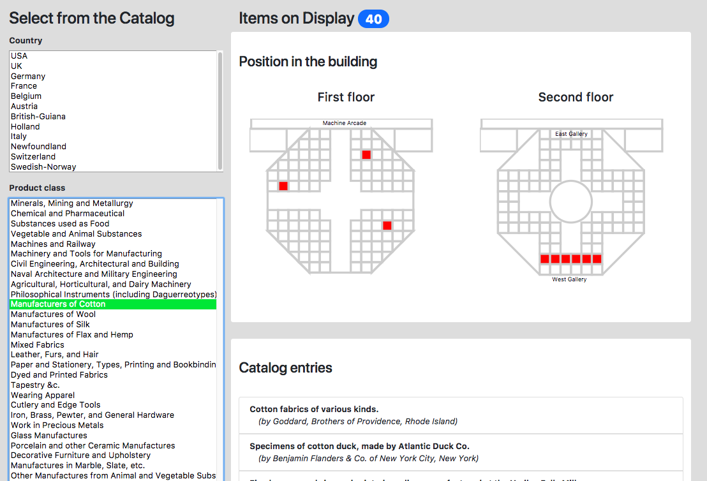

The 1853 New York Crystal Palace, also known as the Exhibition of the Industry of All Nations, was the center of America’s first World’s Fair. Modeled on the Great Exhibition held at the Crystal Palace in London, the exhibition sought to “draw forth such a representation of the world’s industry and resources as would enable us to measure the strength and value of our own, while it indicated new aims for our enterprise and skill.” While the exhibition burnt down by the end of the decade, it survives through catalogues documenting its success and breadth.
This poster considers the catalogues from the 1853 New York Crystal Palace exhibition in physical and digital forms: as book, file, and database. Originating with the Museum Wormianum and the Louvre, catalogs were published by early museums to visualize and document their work for the world. The New York Crystal Palace exhibition generated multiple print publications to record the museum-like experience through databases and narratives. In the digital era, however, these traditional exhibition catalogs can be used in new ways. As both a physical and digital object, the cataloging forms encourage and allow relationships among user, data, and experience to come to fruition. This project created a dataset and subsequent database from a digitized copy of the New York Crystal Palace catalog to explore the artifacts documented inside. Explored through digital tools such as OpenRefine, Tableau, Palladio, D3.js, and Google Fusion, the Crystal Palace catalogs aid us in viewing catalogs, and their modern database descendants, more generally. How can looking at the Crystal Palace through digital tools let us see not only what others have seen, but also to see things better, see things differently?
Databases, by their nature, lend themselves to exploration – the 1853 Crystal Palace exhibition catalog is no exception. Creating a database from the catalog frees the information inside. The curators of the exhibition thought hard about the best way to arrange the Official Catalog, but once they decided, it couldn’t be changed. Now, the data is alive and fluid. It can be analyzed, represented in new ways. It can be searched, sorted, faceted, mapped, and turned into networked and nodes. Revisualized and revitalized in digital scholarship, this database and subsequent visualizations offer non-narrative perspectives to the exhibition's construction and imagined possibilities. Contributing both to historical and museological scholarship, Cataloging History considers histories of technology through the catalog to understand exhibition construction and the ways in which we can reconstruct it in the digital age.

Ultimately, visualizations of any kind open up the catalog to a new form of interrogation. But they also ask us to reimagine the relationships connections embedded inside. What if we wanted to re-curate the Crystal Exhibition by role, showing off inventors and agents in the major divisions? What if we wanted to use this as an opportunity to tease out specific class categories? What if we wanted to reorganize the catalog by class first, instead of country? Visualizations offer us the ability to think through both the construction of the exhibition and the catalog, while also allowing us the chance to reconstruct its data to new ends. We can use the database and visualizations as way to look into the past, evolving this nineteenth-century exhibition along with new forms oft he catalogue.
Developed in cooperative collaboration with representatives of Brown's Center for Digital Scholarship, Cataloging History examines the ways in which traditional museum data can be mobilized to reimagine historical spaces. Using the catalogue as a piece of technology for understanding the past, it also opened a new dialogue for thinking about catalogues of the future. Building on conversations around "collections as data," this project uses a historical example to pose to both scholars and museums about how cultural heritage may work to be more readily open to computation. How does digital humanties help us unpack historical collections? These visualizations highlight how digital tools can unearth relationships among data to better understand what was there. Cataloging History challenges us to think more deeply about what information is contained in a catalog, about what remains when an exhibition is gone, and about how datasets and tools like these promote the evolution of exhibitions.